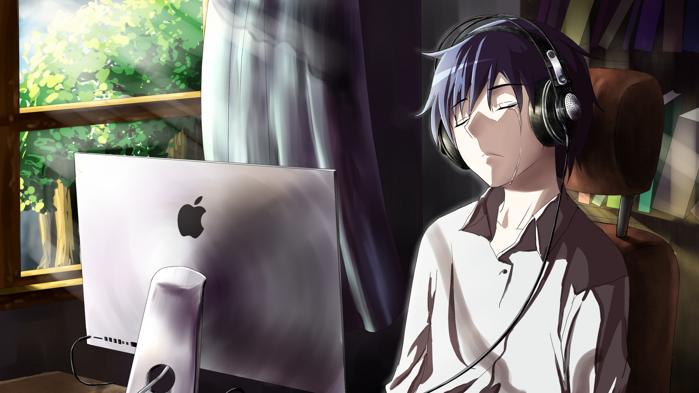

ABOUT


En 2018, les gens auront accès aux premières voitures sans conducteur et vers 2020, toute l’industrie automobile sera bouleversée. Vous ne posséderez plus de voiture. Vous n’aurez qu’a l’appeler avec votre téléphone, celle-ci arrivera à l’endroit où vous êtes et vous conduira à destination.
Plus de stationnement, vous n’aurez qu’à payer pour la distance parcourue et vous pourrez être ainsi productif pendant le trajet. Nos enfants n’auront donc plus besoin de permis de conduire et n’achèteront plus jamais d’automobile. Tout ceci va transformer nos villes parce que nous aurons besoin d’environ 90-95% de voiture en moins. On pourra transformer les stationnements en parcs.
Chaque année dans le monde, 1,2 millions de personnes meurent dans des accidents de voiture.
La plupart des constructeurs d’automobile feront faillite. Ces entreprises traditionnelles cherchent à évoluer et fabriquent de meilleures voitures.
Pendant ce temps, les nouveaux Tesla, Apple, Google ont une approche révolutionnaire et construisent des ordinateurs sur roues. Nombre d’ingénieurs chez Volkswagen et Aude admettent être complètement terrifies par Tesla.
Les compagnies d’assurance se retrouveront face à un problème insoluble. Sans accident, les assurances vont devenir 100 fois moins dispendieuses. La vente d’assurance automobile va disparaître.

Je me présente, je me prénomme Benjamin Peronne, je suis étudiant en développement informatique âgée de 19 ans.
Passionné d’informatique, de culture japonaise et bien sur de jeux vidéo, j’envisage d’être développeurs jeux vidéo, Enfin cela reste a voir si je ne change pas d’avis entre temps car je tiens a précisé que je suis quand même passé de Web Master a Administrateur réseau pour ensuite enchainer avec l’idée d’être développeurs mais développeurs X sans aucune spécialité d’où le fait que j’ai décider de devenir ingénieur Informatique comme ça je toucherais a tout et par la suite après mure réflexion je me suis mis a me posé une question ( Et si j’associer ce que j’aime fait à ma passion pour l’informatique qui deviendra mon métier) mais qu’est ce que j’aime faire mis à part manger ? Jouer, je suis un grand (enfin grand est effectivement un grand mot) mais je suis un fana de jeux vidéo d’où ma conclusion actuelle développeurs en jeux vidéo.
Ayant des bases en HTML,PHP,CSS,Python,C++ et Java, je cherche continuellement a m’améliorer pour atteindre mon objectifs (enfin si j’en change pas entretemps xD).
Ah ! J’ai parlé de jeux vidéo mais sans évoquer mes favoris, bon on ne va pas se le cacher hein mais je suis un fan de chez fan de Final Fantasy (bon je ne suis pas le plus grand fan qui connait tout de A à Z qui a toutes les collections et autres je suis juste le petit fan qui a joué à la plupart des final fantasy et qui prend plaisirs à y jouer encore et encore).
J’ai aussi évoqué la culture japonaise, alors hein oui il y a le repas, le paysage, les traditions mais tout ceci enveloppe les mangas ! et les animes ! Oui il n’y a pas d’Age pour, non mais qui sur terre n’aime pas le Voyage de Shiro, princesse Mononoké où !!! Mon favori franchement il m’a fait pleurer de nombreuse fois Nausicaa de la vallée du vent, sans oublier les classiques : Mon voisin Totoro, le château dans le ciel puis kiki la petite sorcière et j’en passe.
Sur ce petit roman je vais m’arrêter là, je pense vous avoir fait beaucoup lire. Welcome again by Benjamin L.P.